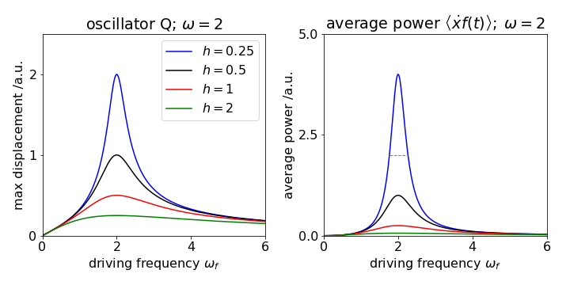

The ‘D’ operator. Solving linear differential equations with constant coefficients¶
# import all python add-ons etc that will be needed later on
%matplotlib inline
import numpy as np
import matplotlib.pyplot as plt
from sympy import *
init_printing() # allows printing of SymPy results in typeset maths format
plt.rcParams.update({'font.size': 14}) # set font size for plots
6 Using the D operator¶
To be able to analyse more complex problems, linear second-order differential equations of the form
are often produced. These equations occur in a number of different situations from chemical kinetics, to the motion of molecules damped by the viscosity of a fluid, or the forced oscillations of the harmonic oscillator.
A straightforward mathematical approach is available, which is the ‘-D-‘ operator method. Note that this only applies when the coefficients are constant; for example, the equation
does not have constant coefficients nor does the Schroedinger equation.
The solution of linear differential equations with constant coefficients will always be a sum of exponential terms. If the exponentials are complex, and so contain \(i\), then the solution can usually be expressed as sine and cosine functions. The methods described here are adapted from Gow(1964). First, the operator rules are described which we are familiar with from ‘normal’ differentiation. The equations with \(f(x) = 0\) are solved next and then those when this is not the case.
6.1 Rules of Differentiation¶
It turns out that if the differential operator \(dy/dx\) is replaced by \(D\) and \(d^2y/dx^2\) by \(D^2\) and so forth, the rules of differentiation can be worked out by allowing \(D\) to operate on the functions that follow it. For equations with constant coefficients, the \(D\) operators formally follow the rules that are valid for polynomials. Some of these results are worked out here, as they will be needed later on.
\(\quad\)(i) If \(u\) and \(t\) are functions of \(x\), then \( D(u + t) = Du + Dt\).
\(\quad\)(ii) The operator can also act on itself just as in repeated differentiation, \(D(Dy) = D^2y\).
It can also act somewhat as a normal variable; thus, it can be multiplied but division is not possible;
Operating on a function gives
and the same result is obtained without expanding the \(D\)’s first, but operating first with \((1+D^2)\) and then \((D-1)\) or vice versa.
\(\quad\)(iii) When operating on exponentials the result is
if \(n\) is an integer and \(k\) is a constant. In conventional notation \(\displaystyle \frac{d^n}{dx^n}e^{kx}=k^ne^{kx}\)
\(\quad\)(iv) If \(\varphi(D)\) represents a polynomial in the D operator, such as \(\varphi(D)=D^2 + D - 3\), the effect it has on the exponential function \( e^{kx}\), for example, is
where \(\varphi(k)\) is a polynomial in \(k\); for example \(\displaystyle (D^2+D-3)e^{kx}=(k^2+k-3)e^{kx}\).
\(\quad\)(v) If \(u\) is a function of \(x\) then
and therefore
\(\quad\)(vi) Generally, if \(\varphi\) is a polynomial function in \(D\),
For example, \(\displaystyle (D-2)e^{2x}\cos(x)=e^{2x}(D-2+2)\cos(x) =-\sin(x)e^{2x}\).
Notice, that in \(\varphi(D)\), each \(D\) is replaced by \(\varphi(D + k)\), and therefore \(D - 2\) becomes \(D\) as \(k\) = 2, and similarly,
6.2 There are many solutions to a linear differential equation¶
If the differential equation is expressed as \(\varphi(D)y = 0\) where \(\varphi(D)\) is a polynomial in the operator \(D\), such as \((D - 1)(D + 2)\), then there are two solutions if the equation is second order, and three if third order, and so forth. These solutions are labelled \(y_1\) and \(y_2\), but the sum of these two solutions is also a solution when \(y_1\) and \(y_2\) are multiplied by constants \(a_1\) and \(a_2\). Thus
is the general form of the solution. The functions \(y_1\) and \(y_2\) are functions of \(x\) (they are often but not always exponentials) and are found systematically as shown next, and \(a_1\) and \(a_2\) are determined by the initial or boundary conditions. The last equation can be shown to be true by operating on it with \(\varphi(D)\); for example,
and \(y_n (n = 1, 2)\) by definition solves this equation, hence \(\varphi(D)y_n = 0\).
The two solutions \(y_1\) and \(y_2\) must be linearly independent of one another, which they are, if one is not a constant multiple of the other. This means that if \(c_1\) and \(c_2\) are constants and both are not zero, then \(c_1y_1 + c_2y_2 = 0\) over the range of \(x\) values defined for the particular equation. A determinant of derivatives of the possible solutions, called a Wronskian (Arkfen 1970; Jeffery 1990), can be formed to check if the solutions are independent, see Section 4.3 case (iii).
6.3 Using auxiliary equations¶
The first-order equation
is the same as \(\displaystyle \frac{dy}{dx} - ay = 0\) and has the solution \(\displaystyle y = Ae^{ax}\) where the constant \(A\) is determined by the initial conditions. If the equation is written as \(\displaystyle (D - a)e^{ax} = 0\), the solution is proved by differentiating \(\displaystyle (D - a)e^{ax} = ae^{ax} - ae^{ax} = 0\).
In a second-order equation,
we hypothesize that the equation is satisfied by exponential functions such as \(\displaystyle y = e^{kx}\) where \(k\) is a constant to be determined. The way to find \(k\) is to substitute the answer into the equation \(\displaystyle (D - a)(D - b)e^{kx} = 0\) and expand, viz.,
The auxiliary equation is
which has roots of \(k_1 = a\) and \(k_2 = b\). As there are two roots the solution is thus the sum of two exponentials
where \(A\) and \(B\) are arbitrary constants determined by the initial conditions. There are three different types of roots to the auxiliary equation.
Case (i)\(\quad\) The roots are real: the result \(y\) is the sum of exponentials.
Case (ii)\(\quad\) The roots are complex: the result \(y\) is the sum of complex exponentials, which can be converted into sine and cosines.
Case (iii)\(\quad\) The roots are the same. In this case, one solution is missing and a test solution has to be tried.
Example Case (i)¶
Suppose that the equation is \(\displaystyle \frac{d^2y}{dx^2} -\frac{dy}{dx}-12=0 \) or \(\displaystyle D^2 -D-12 = 0\),
with the initial conditions \(y = 0\) and \(dy/dx = 2\) at \(x = 0\).
The general solution can be written down immediately as
Next, \(\displaystyle (D^2 - D - 12)e^{kx} = 0\) produces the auxiliary equation \(\displaystyle (k^2 - k - 12)e^{kx} = 0\) whose roots, found by solving
are, \(k_1 = -3\) and \(k_2 = 4\). The solution is therefore
The initial condition, \(y = 0\) at \(x = 0\), gives \(A = -B\) and from the gradient found by differentiating the solution gives \(2 = -3A + 4B\), as \(dy/dx = 2\) at \(x = 0\). Then \(A = -2/7\) and \(B = 2/7\) and the final result is
Case (ii)¶
The equation \(\displaystyle \frac{d^2y}{dx^2}+16=0\),
has the auxiliary equation \(\displaystyle k^2 + 16 = 0\) with roots \(k=\pm 4i\). The solution is
The complex numbers can be represented as \(\displaystyle e^{\pm 4ix} = \cos(4x) \pm i \sin(4x)\) therefore \(y\) can be expressed as
which could be written with new constants \(a\) and \(b\) (determined by boundary conditions) as \(y = a\cos(4x) + b\sin(4x)\).
This is the most compact form of the general solution except perhaps the equivalent form \(\displaystyle y = R\cos(4x + \varphi)\) where \(R\) is the amplitude and \(\varphi\) the phase.
Case (iii)¶
The equation \(\displaystyle \frac{d^2y}{dx^2}-4\frac{dy}{dx}=4y = 0\),
has the auxiliary equation \(\displaystyle k^2 - 4k + 4 = 0\) with both roots \(k = 2\). This means that one solution is missing. We can, so far, write only \(\displaystyle y = Ae^{2x} + y_2\) and have to find \(y_2\).
To find the missing solution, some luck/experience is needed to try
To test this, it has to be differentiated twice and put into the starting equation,
Putting these into the starting equation gives
Hence \(y_2\) is a solution and is clearly linearly independent of \(y_1\) which is \(\displaystyle e^{2x}\). The final solution is therefore
where \(B\) is the second constant determined as usual by the starting conditions.
Wronskians¶
The Wronskian is the determinant of the solutions to a differential equation and their derivatives. If the determinant is zero, the solutions are not independent. In the example just worked through, the determinant is two dimensional as there are only two solutions,
and as the determinant is not zero, the solutions are confirmed to be independent.
In case (iii), we guessed a form of the solution. In general, when the \(k\)’s are the same, the complete solution can have the form
6.4 Solving the equation \(\varphi (D)y=f(x)\) when \(f(x)\ne 0\). Inverse operators¶
The equation \(\varphi (D)y=f(x)\) is described as being non-homogeneous. To solve it the calculation is split into two parts. The first part takes \(f(x) = 0\), as in the previous sections, and solves the complementary function and finds the homogeneous solution \(y_h\) which includes the arbitrary constants. This is the solution to \(\varphi(D)y = 0\) and is a sum of exponential terms. Next, the particular integral is solved and this involves \(f(x)\). The final solution is the sum of these two solutions \(y = y_h + y_p\).
If \(y = u\) is a general solution to the equation \(\varphi(D)y = 0\), the solutions to \(\varphi(D)y = f(x)\) can be seen to be separable if the substitution \(y = u + t\) is made where \(u\) and \(t\) are, like \(y\), each functions of \(x\). The equation becomes
By the rules in Section 4.1 this is \(\varphi(D)u + \varphi(D)t = f(x)\) but as \(u\) is a solution, \(\varphi(D)u = 0\) hence
The equation \(\varphi(D)u = 0\) was solved in Section 4.2-3 and forms the complementary function and homogeneous solution. To solve (30) it is symbolically written as
and what this inverse operator means has to be worked out. The \(\varphi(D)\) is usually a polynomial so if the equation is
the operator has the form
To work out what 1/\(D\) is, let \(\varphi(D) = D\) and then \(\displaystyle D\left( \frac{1}{D}y \right) = y\). However,
which indicates that the inverse operator , \(1/D\) or \(D^{-1}\) represents integration!
Notice, that in this integration, no constants of integration are needed because they are always included in the complementary function.
6.5 Inverse operators applied to exponentials \(\displaystyle f(x)=ce^{mx}\)¶
If the function on the right of the equation is an exponential, \(\displaystyle f(x) = ce^{mx}\), where \(c\) and \(m\) are constants, equation (28) shows that
and by repeated differentiation \(\displaystyle \frac{1}{D^n}e^{mx}=\frac{1}{m^n}e^{mx}\). The most general form is
which means that the particular integral can be found if it is an exponential.
To calculate \(\varphi(m)\), let \(m\) replace each \(D\) in the function \(\varphi(D)\). For example, if the exponential is \(e^{3x}\), then \(m\) = 3 and if the function is \(\varphi(D)=(D-4)\) then \(\varphi(m) = 3 - 4 = -1\), thus \(\displaystyle \frac{1}{D-4}e^{3x} =-e^{3x}\).
When \(\varphi(m) =0\) , clearly this method will fail and then that of section 6.7 has to be used.
Example.¶
The equation \(\displaystyle \frac{d^2y}{dx^2}+\frac{dy}{dx}=6y=10+e^{4x}\),
which is also \((D^2 +D-6)y=10+e^{4x}\), can now be solved.
If the constant \(10\) is represented as \(\displaystyle 10e^{0x}\), then the right-hand side is the sum of two exponential terms. The complementary function is the solution to the homogeneous equation \((D - 2)(D + 3)y = 0\), the solution to which can be written down immediately as,
because the roots of \((k - 2)(k + 3) = 0\) are \(k = +2\) and \(-3\). The particular integral is
and is found using (31). The first term with \(m = 0\) gives \(\displaystyle \frac{1}{D^2+D-6} 10e^{0x} =-\frac{1}{6}10e^{0x}=-\frac{5}{3}\). The second term with \(m = 4\) produces \(\displaystyle \frac{1}{D^2+D-6}e^{4x}=\frac{1}{14}e^{4x}\) and the full or general solution is
If you use SymPy the calculation is easy but gives no indication as to how it is done.
x, y = symbols('x, y')
y = Function('y')
f01 = diff(y(x),x,x)+diff(y(x),x)-6*y(x)-10-exp(4*x)
ans = dsolve(f01)
ans
6.6 Inverse operators applied to sine and cosine functions; \(f(x) = \sin(ax)\) and \(f(x) = \cos(ax)\)¶
Equations of the form \(\varphi(D)y = b \sin(mx)\) and \(\varphi(D)y = b\cos(mx)\) often describe forces and simple harmonic motion where the driving force is a sine or cosine. To solve this type of equation, use the exponential from \(\displaystyle e^{imx}\) etc. to replace the sine or cosine term. The real part is then extracted if \(f(x)\) is a cosine, and the imaginary part if a sine, because \(\displaystyle e^{\pm iax} = \cos(ax) \pm i\sin(ax)\). This method is therefore effectively the same as the previous section.
If the equation is \(\displaystyle 2\frac{d^2y}{dx^2}-5\frac{dy}{dx}-3y=7\sin(4x)\) the complementary function is found with \((2D + 1)(D − 3)y = 0\) which has roots −1/2 and 3 and gives \(\displaystyle y_h=Ae^{-x/2}+Be^{3x}\). Replacing the sine by an exponential makes a particular integral
Using \(m=4i\) gives the solution \(\displaystyle y_p=7\frac{1}{32i^2-20i-3}e^{4ix}\). This can be simplified by multiplying top and bottom by the conjugate of the complex number,
Now replacing the exponential gives
and the imaginary part chosen as \(f(x)\) is a sine function giving \(\displaystyle y_p=\frac{28}{325}\cos(4x)-\frac{49}{325}\sin(4x)\) and the general solution is \(\displaystyle y=Ae^{-x/2}+Be^{3x}+\frac{28}{325}\cos(4x)-\frac{49}{325}\sin(4x)\).
Luckily, SymPy obtains the same result!
x, y = symbols('x, y')
y=Function('y')
f02 = 2*diff(y(x),x,x)-5*diff(y(x),x)-3*y(x)-7*sin(4*x)
ans2= dsolve(f02)
ans2
6.7 Inverse operators applied to \(\displaystyle f(x)=e^{mx}G(x)\)¶
When the function on the right of the differential equation is more complex, the particular integral can still be found. In this case, the relationship,
is used. This is done by replacing each \(D\) by \(D + m\) with the \(m\) coming from the power in the exponential. If, for example, \(\varphi(D) = D + 3\) then \(\varphi(D + m) = D + 3 + m\). If the function \(G(x) = 1\), then the \(f(x)\) reverts to a pure exponential. The formula (32) allows a solution in cases where \(\varphi(m) = 0\).
Example¶
The equation \((D^2 + D - 2)y = 2\sinh(2x)\) has the complementary function \(\displaystyle y_h = Ae^{−2x} + Be^{x}\). The sinh is now expanded into exponentials making the particular integral
Using the method from the previous section, the first term is \(\displaystyle \frac{1}{(D-1)(D+2)}e^{2x}=\frac{e^{2x}}{4}\). The second exponential term is \(\displaystyle \frac{-1}{(D-1)(D+2)}e^{-2x}=-\frac{e^{2x}}{0}\). which cannot be solved in this way as \(\varphi (m) = 0\). Instead, the solution is found in two steps; the first step in the usual way, substituting into \(D − 1\), and the second using equation (32). The first step is,
then letting \(1 = G(x)\)
Next using eqn. 32, \(\varphi(D)\) in this equation is replaced by the actual value in the equation, which is \(D + 2\) or \(\varphi(D) \to (D+2+m)\) so that as \(m = -2, (D + 2 + m) \to D\) and
and \(x\) is produced because \(1\) is integrated to \(x\) or \(D(x) = 1\). The final solution is \(y_h + y_p\) and is
The solution can be confirmed by differentiation and substitution into the original equation and should produce zero.
6.8 Inverse operators applied to polynomials¶
If \(f(x)\) is a polynomial, then each reciprocal \(D\) term produced by the original equation can be expanded out as a series.
and the polynomial \(f(x)\) is differentiated by the series until no terms are left. Often a term in 1/\(D\) is present after differentiating. This term cannot be expanded as a series and instead it is used to integrate each \(x\) term remaining and this is illustrated in the next example.
Example (i)¶
If the equation to solve is \(\displaystyle (D^2 + D - 2)y = x^3e^{-2x}\) then the complementary function is the same as that in the last example and is
In the particular integral, the exponential part is solved first using (32) with \(m = -2\), producing
Now the \(x^3\) part is solved. Changing \(D - 3\) into \(-3(1 - D/3)\) and expanding the series produces
The general solution is therefore \(\displaystyle y= Ae^x+Be^{-2x}-\frac{1}{3}e^{-2x}\left(\frac{x^4}{4}+\frac{x^3}{3}+\frac{x^2}{3}+\frac{2}{9}x\right)\)
Example (ii)¶
To solve \(\displaystyle (D^2 +3D-4)y = x \) the roots of \(\displaystyle k^2 +3k-4=0\) produce \(k = 1\) and \(-4\) and therefore the complementary function is
The particular integral is, \(\displaystyle y+p=\frac{1}{(D-1)(D+4)}x\) and expanding this expression as two series produces
and therefore the general result is \(\displaystyle y_h = Ae^{-4x} + Be^x - x/4 - 3/16\).
6.9 Alternative evaluation method for the particular integral¶
Although the inverse operator method can be used, this can be formed into a formula and used to determine the particular integral. The integral produced can sometimes be complicated. Suppose that the differential equation is \(\displaystyle (D^2 + aD + b)y = f(x)\) and has roots \(k_1\) and \(k_2\) then \((D - k_1)(D - k_2)y = f(x)\).
The particular integral is then calculated as the nested integral
If we consider again \(\displaystyle(D^2 +D-2)y=x^3e^{-2x}\) ,the roots are \(k_1 = 1\) and \(k_2 = -2\) then
This is not a difficult integration and each one can be done by parts as it has the form \(\displaystyle x^ne^{-mx}\) with \(n\) and \(m\) as integers. Alternatively, the general form can be looked up in a table. Using SymPy the integration can be written in a general form where the function \(f\) is specified as well as constants \(m\), and \(n\) which are the roots of the auxiliary equation.
n, m, x, y, f = symbols('n, m, x, y, f')
f = x**3*exp(-2*x)
m = 1
n = -2
ans = exp(n*x)*integrate( exp((m-n)*x) * integrate(exp(-m*x)*f,x) , x)
collect(expand(ans),exp(-2*x))

which gives the same result as (33) when simplified a little further. It does not ultimately matter which root, \(k_1\) or \(k_2\), is placed first when doing the calculation. However, the order does make a difference for this part, but when combined with the homogeneous solution and the limits are added, the result is the same. Finally, note that if the differential equation has three roots then the particular integral has one more level of nesting, viz.;
6.10 Damped simple harmonic motion¶
The equations we have been solving are of the type found when oscillators have, in addition to acceleration, a damping term due to viscous effects, and another term if an external force drives the oscillator. The effect of damping is to dissipate the energy from the moving body into the surrounding medium where it ends up as heat. Consequently, if an external force does not drive the body, the damping eventually brings the body to rest. In the presence of a constant force such as gravity the damping due to air resistance will cause a falling object to reach a constant terminal velocity. On the molecular scale, a charged protein moving in the presence of an external electric field will be accelerated and driven along by the field but this motion will be constrained by the viscous drag effects due to interaction with the solvent. The equations used to describe the motion of bodies in fluids can be ‘mapped’ onto those describing electronic circuits consisting of resistors, capacitors, and inductors.
If the oscillator is not driven but is in a viscous medium, a pendulum in air for example, the equation of motion is modified from that given in Section 3.2, and the motion is described as exhibiting free damped oscillations. The damping naturally resists motion, and it is often assumed to be linearly proportional to the speed. The force it produces is \(-cdx/dt\) where \(c\) is a constant of proportionality and is the damping coefficient and has units kg s\(^{-1}\). The negative sign in front of \(c\) ensures that damping resists motion.
The equation of motion (13) becomes,
where \(f(x)\) is the expression describing the external force on the oscillator. If this is caused by Hooke’s law, then it is \(f(x) = -k_fx\) if \(x\) is the displacement from equilibrium and \(k_f\) the force constant. The equation to solve is
where for clarity the abbreviations \(2h = c/m\) and \(\displaystyle \omega^2 = k_f /m\) are made. The natural frequency of the oscillator is \(\omega\). In \(D\) operator notation, this equation is \(\displaystyle D^2 + 2hD + \omega^2 x = 0\). Using the solutions developed in Section 4.4–9 the characteristic function can be written down directly after finding the roots of the equation \(\displaystyle k^2 + 2hk + \omega^2 = 0\). These are \(\displaystyle k = -h \pm \sqrt{ h^2 - \omega^2 }\), therefore, the homogeneous solution for the displacement at time \(t\) is.
where \(A\) and \(B\) are constants determined by the initial conditions. This equation is more conveniently written as \(\displaystyle x = Ae^{m_1t} + Be^{m_2t}\) using the abbreviations \(\displaystyle m_{1,2} = -h \pm \sqrt{h^2 - \omega^2}\). The term \(\sqrt{h^2 - \omega^2}\) has the dimensions of frequency but may be a complex number as the square root can negative, or it may be real or zero, therefore it is necessary to identify these different conditions.
These three cases are identified as
(i)\(\quad\) over-damped, \(h^2 \gt \omega^2\),
(ii)\(\quad\) under-damped \(h^2 \lt \omega^2\) and
(iii)\(\quad\) critically damped, \(h^2 = \omega^2\).
Figure 12 shows these cases.
Fig 12. The three cases when an oscillator is damped, i.e. friction impedes motion. The parameters used are shown on the plots. The dotted line is the exponential decay \(\displaystyle e^{-ht}\) where \(h=c/2m\) is the damping coefficient, \(c\), divided by the mass \(m\) and is the same in each plot and is added for comparison.
(i) Over-damping¶
When the damping is very large the motion is very sluggish and no oscillations are observed. This behaviour is observed when \(\displaystyle h^2 - \omega^2 \gt 0\) the values of \(m_1\) and \(m_2\) in the exponentials are both negative because \(\displaystyle \sqrt{ h^2 - \omega^2} \lt h\) and this is called the over-damped case.
In this case, the oscillator eventually drifts to a standstill in a gradual and uniform manner without oscillating. This situation would correspond to that describing the motion of a light pendulum moving in thick oil. If the initial displacement is \(d\) and the motion starts with an initial velocity of zero, the initial conditions are \(x(0) = d\) and \(dx/dt = 0\) when \(t\) = 0. With these conditions \(d = A + B\) and \(dx/dt =0= m_1A+m_2B\) and therefore \(A=-m_2d/(m_1 -m_2)\) and \(B=m_1d/(m_1 -m_2)\) which gives
To simplify the equations we let \(\displaystyle m_{1,2}=-h\pm \omega_1 \) where \(\omega_1 = \sqrt{h^2 - \omega^2} \). The equation of motion is
and will decay bi-exponentially to zero.
(ii) Under-damping¶
When the damping constant is small the oscillator can still move somewhat freely and is only gently impeded by friction that eventually bringing it to rest. When \(\displaystyle h^2 - \omega^2 \lt 0\), the motion is under-damped. A mechanical analogy is the motion of weight suspended by a (real) spring or elastic band. In this case \(m_1\) and \(m_2\) are complex numbers, which means that exponentials can be represented as sines and cosines. If \(\displaystyle h^2 - \omega^2 = -\omega_1^2\) the displacement is
As the exponentials are complex numbers it is sometimes convenient to write the constants as \(\displaystyle A=\frac{C}{2}e^{i\theta},\; B=\frac{C}{2}e^{-i\theta}\) where \(C\) and \(\theta\) are new constants that depend on the initial conditions. This make
This solution can also be written as
With the initial conditions given in (i) and after some rearranging, this equation can be rewritten as
The motion is still oscillatory but the amplitude of the motion decreases exponentially with a rate constant determined solely by the damping coefficient \(h\), see Fig. 12. This means that if the exponential \(\displaystyle \pm de^{-ht}\) were drawn, the curve would touch either all the crests or all the troughs of the decay. The oscillation has a frequency \(\displaystyle \omega_1 = \sqrt{\omega^2 - h^2}\) radians s\(^{-1}\), which is lower than that of the undamped case, \(\omega\), and the period is longer
It is possible to characterize the number of oscillations by defining a quality factor, \(\displaystyle Q = \frac{\omega}{2h}\). The amplitude of the motion has decayed to 1/\(e\) when \(ht\) = 1; therefore, substituting for \(h\) and the period \(T\) produces \(\displaystyle Q = \pi\frac{t}{T}\) . The ratio \(t/T\) is the number of periods for the oscillator to lose 1/\(e\) of its amplitude. If the oscillator is lightly damped, then the \(Q\) is large and vice versa. The idea of \(Q\) factors is, however, more important in the driven damped oscillator; the closer the driven frequency is to the free or natural oscillator frequency, the greater the \(Q\) factor is. The (under) damped oscillator in Fig. 12 has a \(Q\) of \(\approx 3\), because \(t/T \approx 1\), and this \(Q\) is very small; it is clear that very few oscillations occur before the motion effectively ceases.
The total energy of the oscillator is the sum of kinetic and potential energies \(\displaystyle E=\frac{m}{2}\ddot x +\frac{k_f}{2}x\) where \(\dot x\) is the second derivative with respect to time. In the case of very small damping when \(h << \omega\) then using eqn 36a and letting \(\omega_1 \approx \omega\) and assuming \(h\) is small and using \(\omega =\sqrt{k_f/m}\) gives
which shows that the energy is dissipated with twice the rate constant than that of the oscillations decay. Sometimes the logarithmic derivative is referred to, this is \( E\) is \(\displaystyle \frac{\ln(E)}{dt}=-2h\).
(iii) Critical damping¶
In this case the oscillator comes to rest in the quickest possible time without overshooting. This has everyday practical application in hydraulic and pneumatic systems such as spring returns for closing doors. When \(\displaystyle \omega^2 = h^2\) and \(\omega_1\) = 0, the motion is critically damped. The characteristic equation is now \(\displaystyle k^2 + 2hk + h^2 = 0\) with double roots \(\pm h\). The solution is sought from the method outlined in Section 4.3(iii). One solution is \(\displaystyle x_1 = e^{-ht}\) and a test solution tried as \(\displaystyle x_2 = te^{-ht}\), which is a suitable function. This is tested by differentiating the result, \(\displaystyle x = Ae^{-ht}(1 + Bt)\).
With the initial conditions as before,
which decreases uniformly to zero but more slowly than the undamped case due to the multiplicative \(1+ht\) term, and faster than when over-damped. If the initial velocity is not zero then \(x\) may rise before falling or fall and undershoot, before reaching zero; Fig. 13.
Fig 13. Critically damped oscillator with different initial values of its velocity.
6.11 Driven Simple Harmonic Motion¶
When a mass is driven by an external power source, it can be made to move continuously and therefore has behaviour not seen in a free oscillator. If the oscillator is also damped some of the energy is dissipated as heat into the surroundings. However, if damping is essentially absent and if the driving force is at the same period and phase as the natural period of the oscillator, resonance occurs. In this situation, the energy supplied cannot be dissipated and the oscillator can be destroyed by being forced to undergo ever larger displacements from its equilibrium position.
Constant external force¶
If the external force is constant then the equation of motion is,
and as in section (4.10) this can be re-written using eqn 35 as
for which solutions are already given in Section 4.10 provided \(x\) is replaced by \(\displaystyle x'=x−W/\omega^2\).
In \(D\) notation the equation is \(\displaystyle D^2 +2hD+\omega^2x'=0\).
Varying external force¶
When the driving force is not constant then its form is clearly going to determine the nature of the solution. The general equation is
where \(f(t)\) is the driving force. As before, \(h\) is the damping coefficient and \(\omega\) is the constant frequency of the free oscillator. This equation, when written in \(D\) operator form is \(\displaystyle D^2 + 2hD + \omega^2x = f(t)\) and some solutions for different \(f(t)\) have been developed in Section 4.
If the oscillator is driven by a force \(f(t) = a\sin(\omega_f t)\) then
The homogeneous equation is \(\displaystyle x_h = Ae^{m_1t} + Be^{m_2t}\) as found in equation 36 and \(\displaystyle m_{1,2}=-h\pm\sqrt{h^2-\omega^2}\). The particular integral is obtained by converting the sine to an exponential, integrating and then extracting the imaginary part,
substituting for \(i\omega\) gives
Replacing the exponential by \(\displaystyle e^{i\omega_f t} = \cos(\omega_f t) + i \sin(\omega_f t)\), substituting for \(m_1\) and \(m_2\), and collecting just the imaginary part because the driving force is a sine function, gives
which is the long time, and sometimes called the steady state, solution for the displacement after the exponential terms in \(x_h\), which are of little interest in many physical situations, have been damped out. The long time behaviour is independent of the initial conditions.
The oscillators’ maximum displacement is shown vs the driving frequency \(\omega_f\) in Fig. 14. As the resonance is approached the oscillation amplitude increases significantly, and the frequency where it peaks approaches that of the free oscillator. The frequency at maximum amplitude is found in the usual way by differentiating and setting the result to zero. The maximum value has the frequency \( \omega_f=\sqrt{\omega^2-2h^2}\) which is a lower value than the free oscillator.
The velocity (\(\dot x\) or \(dx/dt\)) is often of interest and is obtained by differentiating \(x\) and, for the long time or steady state solution, is
The rate at which work is done on the oscillator by the applied force is \(\dot x f(t)\), which has units of energy/time or watts, and is
The average power over time is obtained by working out the sine and cosine values over a whole cycle. As sine is an odd function the integral of the product \(\cos(\omega_f t)\sin(\omega_f t)\) is zero. The cosine squared has an average value of \(1/2\). This makes the average power,
which is shown for different amounts of damping in fig. 14. As expected the power is maximal when the driving frequency \(\omega_f\) is equal to the natural frequency of the oscillator, \(\omega\).

fig 14: Left: The maximum amplitude of a forced or driven oscillator vs. the driving frequency \(\omega_f\), with different damping coefficients \(h\) and a natural frequency of \(\omega = 2\). Right: The average power also vs frequency with the same \(h\) values. The maximum average power is \(1/4h^2)\) and the fwhm \(2( h+\sqrt{h^2+\omega^2})\).
The \(Q\) factor can be redefined as the ratio of the resonant frequency to the full width at half maximum of the curve of power absorbed vs driving frequency or \(Q = \omega/\Delta\omega\). This can be shown to be \(Q = \omega m/h\). The characteristic behaviour of an oscillator with a high \(Q\) factor (low damping) is that it responds by peaking with large displacements near to resonance, and is relatively unperturbed by other driving frequencies. The displacements are large, because the denominator in the amplitude becomes small, both as a result of \(h\) being small and \(\omega_f \to \omega\). If the damping should be zero (\(h\) = 0), then a ‘resonance catastrophe’ can occur as the amplitude becomes infinity when \(\omega_f = \omega\). When the \(Q\) is low, which means that the damping factor is large, the oscillator amplitude remains small over a wide range of driving frequencies. A detailed account of damped and forced oscillators is given by Pain (1993).
Although the damped, forced oscillator is described in terms of a mechanical oscillator, such as a pendulum or a spring, it also forms a classical model of how an atom or molecule interacts non-resonantly with a light wave. The electric field of the radiation produces a sinusoidal force on each electron. The displacement of the electron \(\delta x\) produces a dipole moment \(e\delta x\) if \(e\) is the electronic charge. The polarization or dipole moment/unit volume is obtained from this model by summing over all the electrons in a given volume. The refractive index and conductivity can be derived from the polarization. However, the classical model of absorbing a photon leads to very unusual behaviour because energy would be absorbed over a wide range of frequencies and in increasing amounts as resonance is approached, which is clearly not what is observed experimentally. Only a quantum model properly describes absorption.
Q-switching lasers.¶
\(Q\)-switching is used to produce intense nanosecond duration laser pulses, which are used to measure rates of chemical reactions; they are also used in cutting and welding materials and in laser ranging or ‘lidar’. Siegman (1986) describes Q-switching in detail but the basic idea is as follows. The gain material is excited by flash lamps or laser diodes but the laser cavity is initially held in a condition of low gain, so it cannot lase even though the gain medium, such as Nd\(^{3+}\) ions in YAG, is being excited. The gain is forced to be low by an electro-optic polarizer inserted inside the laser cavity. This is aligned so that those photons that reach the cavity mirrors are not fed back into the gain medium with the correct polarization and are therefore not amplified. As the gain material is excited, a large population inversion soon results and consequently it contains a large amount of stored energy. A laser pulse is now made by suddenly increasing the \(Q\) of the laser cavity by increasing the gain. This can be done by switching the state of the electro-optic polarizer so that light can now travel back and forth between the mirrors. The effect that this has is to cause a very rapid rise in the gain of the cavity because, by stimulated emission, the stored energy is converted into photons, and a laser pulse of a few nanoseconds duration is produced. The photons deplete the gain far more rapidly than it can be replenished by excitation from the flash lamps, and the gain drops, terminating the laser pulse.
The \(Q\) of an optical cavity is given by \(Q = \omega E/(-dE/dt)\), where \(\omega\) is the laser frequency, \(E\) the energy, and \(dE/dt\) the power or rate of change of energy. The Nd YAG laser operates at \(1064\) nm and can typically produce a \(1\) J, 10 ns duration \(Q\)-switched laser pulse. If the cavity gain is switched in \(10\) ns, then the \(Q\) of the cavity is, for a short period, extremely high at \(\approx\) \(3\) million.
Atomic Force Microscope¶
The \(Q\) of mechanical systems is also important. The scanning atomic force microscope, AFM, has a microscopic cantilever with an even smaller tip at its base. The first type of instruments worked in contact mode where the tip was dragged over a surface using piezoelectric actuators to control its position. The distance from the surface was measured by how much the cantilever was bent by the surface forces. In this mode, the surface can be damaged by the tip. To prevent this and to increase the quality of the images, the tip can be made to oscillate up and down when driven by a piezoelectric crystal and it only ‘taps’ the surface once per period. The electrons in an atom on the surface interact with the tip as it approaches and it does not have to touch a molecule for its presence to be felt. The oscillation’s amplitude (\( \approx 20\) nm) is maintained by a feedback loop and, as it approaches a molecule on the surface, the oscillation frequency changes and so the feedback changes also thus providing a measure of the surface shape. If the \(Q\) of the cantilever is high, then the amplitude of the cantilever’s response is large when the driving frequency is close to that of its natural frequency and is small at other frequencies. When a molecule is encountered, the force on the cantilever changes its frequency by a small amount, which because the \(Q\) is high, causes a large change in its amplitude; see Fig. 14 thus increasing sensitivity. The \(Q\) of the cantilever can be as high as \(20000\) when operated at \(250\) kHz and images with resolution of a few angstrom are possible.
The \(Q\) factor can be redefined as the ratio of the resonant frequency to the full width at half maximum of the curve of power absorbed vs driving frequency or \(Q = \omega/\Delta\omega\). This can be shown to be \(Q = \omega m/h\). The characteristic behaviour of an oscillator with a high \(Q\) factor (low damping) is that it responds by peaking with large displacements near to resonance, and is relatively unperturbed by other driving frequencies. The displacements are large, because the denominator in the amplitude becomes small, both as a result of \(h\) being small and \(\omega_f \to \omega\). If the damping should be zero (\(h\) = 0), then a ‘resonance catastrophe’ can occur as the amplitude becomes infinity when \(\omega_f = \omega\). When the \(Q\) is low, which means that the damping factor is large, the oscillator amplitude remains small over a wide range of driving frequencies. A detailed account of damped and forced oscillators is given by Pain (1993).
Although the damped, forced oscillator is described in terms of a mechanical oscillator, such as a pendulum or a spring, it also forms a classical model of how an atom or molecule interacts non-resonantly with a light wave. The electric field of the radiation produces a sinusoidal force on each electron. The displacement of the electron \(\delta x\) produces a dipole moment \(e\delta x\) if \(e\) is the electronic charge. The polarization or dipole moment/unit volume is obtained from this model by summing over all the electrons in a given volume. The refractive index and conductivity can be derived from the polarization. However, the classical model of absorbing a photon leads to very unusual behaviour because energy would be absorbed over a wide range of frequencies and in increasing amounts as resonance is approached, which is clearly not what is observed experimentally. Only a quantum model properly describes absorption.
6.12 Brownian motion¶
In 1828, the naturalist Robert Brown (Brown, 1828) reported that the motion of pollen seen under the microscope never ceases. The same was soon shown to be true of microscopic particles of glass, minerals, petrified wood, and even stone from the Egyptian Sphinx. Various causes were investigated; convection currents, uneven evaporation, capillary action, and so forth, but none proved to be responsible. We now understand that Brownian motion is due to the ceaseless, thermally induced motion of all molecules colliding with one another and with larger particles and in doing so moving them. Because the number of collisions with a particle is not the same in all directions at each instant in time, the forces will not always cancel exactly and the particle will be knocked about in a random manner. Figure 14a shows a simulation of a random walk in two dimensions. In 1910, Perrin observed and recorded the random motion of a single particle under the microscope and measured the average of the square of the distance moved \(\langle x^2\rangle\) in periods of \(30\) seconds, the scale being of a few tens of micrometres. Einstein had previously calculated what the average displacement should be in a given time period.
The total energy of a macroscopic particle in a liquid or gas is the sum of its kinetic and potential energy. Its average energy can be found by statistical mechanics and is
The equipartition theorem states that each squared term in the equation for the displacement of a particle contributes \(k_BT/2\) to the average energy. In three dimensions the average is therefore \(3k_BT/2\). A particle moving in a harmonic potential has a contribution of \(k_BT/2\) from its kinetic energy and \(k_BT/2\) from its potential energy, since this energy is \(kx^2/2\) for a displacement \(x\) and force constant \(k\). The total average energy is therefore \(k_BT\).
To find an expression for \(\langle x^2\rangle\), an equation of motion has to be solved, and for the driven and damped motion of a particle in a fluid, this equation has the form
where \(\gamma\) is a damping coefficient and \(f\) is a fluctuating random force. However, this equation cannot be usefully solved because \(f\) is a random quantity, but, in any case, the experimental measurement is the average of the square of the displacement \(\displaystyle \langle x^2\rangle\), not \(x\) the displacement from equilibrium, so this average quantity is sought. There are two steps to doing this. First, a differential equation for \(\displaystyle x^2\) is sought and, secondly, its average over time is found and the equipartition theorem is used to do this. Although the averaging can be done before integrating, as this greatly simplifies the calculation, it is not essential because integration is a sum and the order of integrating and averaging can be interchanged. In physical terms, averaging before integrating is valid because we can repeatedly observe the displacement of one particle at each of several time steps and average the results, or we can observe many particles simultaneously, averaging after each time step. The ergodic hypothesis states that these approaches are equivalent.
Fig 14a. Simulation of 2D random walks to illustrate brownian motion. Three different walks are shown each starting at the origin (red dot). The wide variation in the detail shape of the walks is clear.
The first step to solve the differential equation is to find an expression for \(\displaystyle x^2\); the ‘trick’ is using the relationship
(treat \(x\) as a function of \(t\)), and as \(\displaystyle dx^2/dt^2=2x(dx/dt)\) this gives after substituting for \(\displaystyle d^2x/dt^2\) and with some rearranging
Next, the average of \(\displaystyle x^2\) has to be obtained. Because \(f\) is a random force, \(x\) and \(f\) are uncorrelated in time, therefore \(\langle xf \rangle = 0\). The average kinetic energy can also be replaced with \(\displaystyle m \langle ( dx/dt)^2 \rangle =k_BT\) and the equation of motion simplifies to,
This equation is solved with the initial conditions that at time zero \(\displaystyle \langle x^2 \rangle = 0\), and its first derivative is also zero at \(t\) = 0. The methods of previous sections could be used but using SymPy gives, with \(\displaystyle \langle x^2 \rangle \equiv s\)
m, s, t, gamma, kT, C1, C2 = symbols('m, s, t, gamma, kT, C1, C2')
s = Function('s')
f01 = m*diff(s(t),t,t) + gamma*diff(s(t),t) - 2*kT
ans = dsolve(f01)
ans
with initial conditions \(\displaystyle \langle x^2\rangle = 0\) and \(\displaystyle dx\langle x^2\rangle/dt = 0\) at \(t\) = 0, gives constants \(C_1+C_2=0\) and \(C_2=2mk_BT/g^2\) from which
and at long times, \(t \gg \gamma /m\), when the transient (exponential) behaviour is finished, the result is
which shows that the average displacement increases linearly with time. Einstein further derived the famous formula
where \(D\) is the diffusion coefficient. This can also be obtained from an analysis of a random walk and is found by solving the diffusion equation. Therefore combining the results gives \(\displaystyle D=k_BT/\gamma\). Using Stokes law, \(\gamma = 6\pi\eta r\), where \(\eta\) is the solvent viscosity and \(r\) the radius of the particle, the Stokes-Einstein equation is found,
This equation has proved very successful in predicting the diffusional properties of molecules and properties depending on diffusion, such as the rate constants of diffusion controlled chemical reactions, even though the equations strictly relate only to macroscopic particles. As a rule of thumb, we can feel confident in using the equation if the solvent is smaller than the molecule diffusing in it, because the derivation assumes a continuous structureless solvent, and not a molecular one. When you use these equations, note that the SI unit of viscosity is Pa s (\(\mathrm{kg\, m^{-1} s^{-1}}\)) but the common unit is centipoise and \(1\) Pa s = \(10^{-3}\) cP. The diffusion coefficient \(D\) has units of \(\mathrm{m^2\, s^{-1}}\).